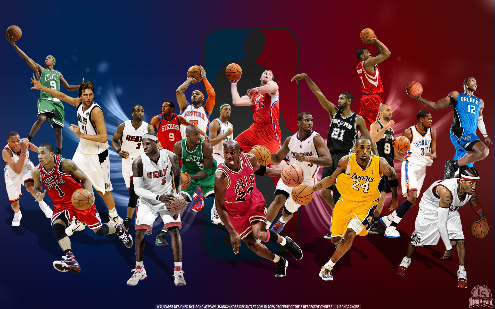
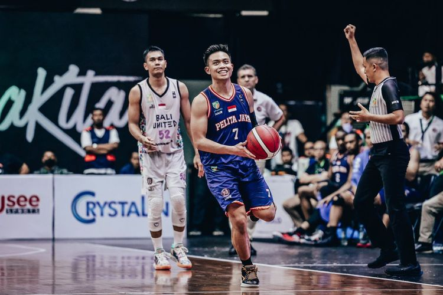
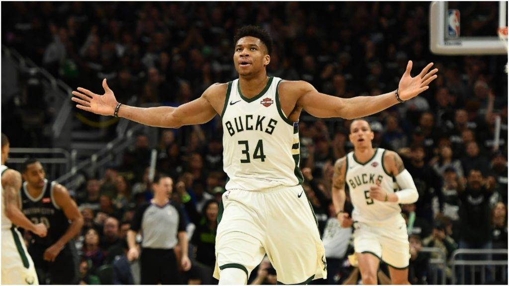
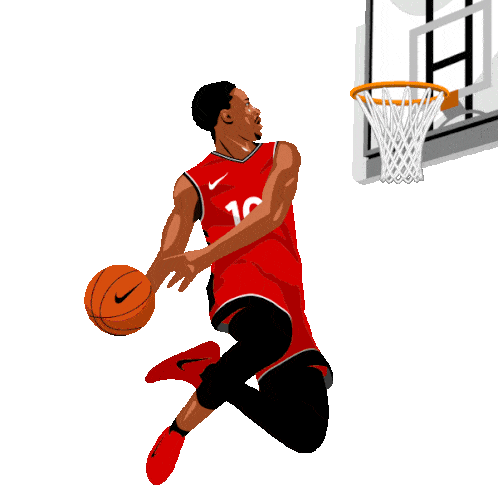

ditulis oleh Amaliyah Nur Haida. pada 17 Oktober 2023
Apa Itu Bola Basket ?
Bola basket (bahasa Inggris: basketball) adalah olahraga bola berkelompok yang terdiri atas dua tim beranggotakan masing-masing lima orang yang saling bertanding mencetak poin dengan memasukkan bola ke dalam keranjang lawan.Bola basket dapat di lapangan terbuka, walaupun pertandingan profesional pada umumnya dilakukan di ruang tertutup. Lapangan pertandingan yang diperlukan juga relatif tidak besar, misal dibandingkan dengan sepak bola. Selain itu, permainan bola basket juga lebih kompetitif karena tempo permainan cenderung lebih cepat jika dibandingkan dengan olahraga bola yang lain, seperti voli dan sepak bola.
Bola basket menjadi salah satu olahraga yang paling digemari oleh penduduk Amerika Serikat dan penduduk di belahan bumi lainnya, antara lain di Amerika Selatan, Eropa Selatan, Lithuania, dan juga di Indonesia. Banyak kompetisi bola basket yang diselenggarakan setiap tahun, seperti British Basketball League (BBL) di Inggris, National Basketball Association (NBA) di Amerika, dan Indonesia Basketball League (IBL) di Indonesia.[4] Bola basket merupakan salah satu cabang olahraga yang menuntut VO2 max tinggi. Dengan latihan VO2 max ini dapat ditingkatkan yang menghasilkan peningkatan hanya berkisar 25% dari kondisi awal latihan. Dari latihan tersebut elebihnya ditentukan oleh potensi fisik yang ada pada setiap individu.[5][butuh sumber yang lebih baik] Bola basket merupakan cabang olahraga dengan waktu istirahat yang lebih lama, sehingga dapat memanfaatkan teknik recovery dengan tepat.
Sejarah Singkat Bola Basket
Pada tahun 1891, Dr. James Naismith, seorang guru olahraga asal Kanada yang mengajar di sebuah perguruan tinggi untuk para siswa profesional di YMCA (sebuah wadah pemuda umat Kristen) di Springfield, Massachusetts, harus membuat suatu permainan di ruang tertutup untuk mengisi waktu para siswa pada masa liburan musim dingin di New England. Terinspirasi dari permainan yang pernah ia mainkan saat kecil di Ontario, Naismith menciptakan permainan yang sekarang dikenal sebagai bola basket pada 15 Desember 1891.
Menurut cerita, setelah menolak beberapa gagasan karena dianggap terlalu keras dan kurang cocok untuk dimainkan di gelanggang-gelanggang tertutup, dia lalu menulis beberapa peraturan dasar, menempelkan sebuah keranjang di dinding ruang gelanggang olahraga, dan meminta para siswa untuk mulai memainkan permainan ciptaannya itu. Berbeda dengan keranjang bola basket modern, keranjang yang digunakan saat itu tidak berlubang, sehingga bola yang masuk harus dikeluarkan secara manual. Tentu saja cara ini tidak efisien, sehingga bagian bawah keranjang dilubangi agar bola bisa keluar.
Permainan resmi pertama dimainkan di gimnasium YMCA di Albany, New York, di tanggal 20 Januari, 1892, dengan sembilan pemain. Permainan selesai dengan skor 1–0; dan dimainkan di atas lapangan yang ukurannya setengah dari lapangan NBA.
Frank Mahan, salah satu pemain permainan pertama tersebut, menghampiri Naismith, di awal 1892, dengan maksud menanyakan Naismith nama dari permainan baru ciptaannya. Naismith menjawab bahwa dia belum memikirkannya karena ia berfokus memulai permainan. Mahan menyarankan nama "Naismith ball", di mana Naismith tertawa, dengan berkata nama seperti itu akan membunuh permainan sebuah permainan. Mahan lalu berkata, "Kenapa tidak basketball (Bola Basket)?" Naismith menjawab, "kita punya sebuah keranjang (basket) dan sebuah bola, itu akan menjadi nama yang bagus."
ada awalnya, setiap tim berjumlah sembilan orang dan tidak ada dribble, sehingga bola hanya dapat berpindah melalui lemparan. Sejarah peraturan permainan basket diawali dari 13 aturan dasar yang ditulis sendiri oleh James Naismith.
Bola basket di Indonesia
Ada beberapa informasi mengatakan masuknya basket bersamaan dengan kedatangan pedagang dari Tiongkok menjelang kemerdekaan. Tepatnya, sejak 1894, bola basket[18] sudah dimainkan orang-orang Tiongkok di Provinsi Tientsien dan kemudian menjalar ke seluruh daratan Tiongkok. Mereka yang berdagang ke Indonesia adalah kelompok menengah kaya yang memilih olahraga dari Amerika itu sebagai identitas kelompok Tiongkok modern.
Informasi ini diperkuat fakta menjelang dan pada awal kemerdekaan klub-klub bola basket di sejumlah kota besar seperti Jakarta, Medan, Bandung, Semarang, DI Yogyakarta, dan Surabaya sebagian besar tumbuh dari sekolah-sekolah Tiongkok. Dari klub itu pula kemudian lahir salah seorang pemain legenda Indonesia, Liem Tjien Siong yang kemudian dikenal dengan nama Sonny Hendrawan (Pada 1967 Sonny terpilih sebagai Pemain Terbaik pada Kejuaraan Bola Basket Asia IV di Seoul, Korea Selatan. Waktu itu, tim Indonesia menduduki peringkat ke-4 di bawah Filipina, Korea, dan Jepang).
Pada 1948, ketika Negara Indonesia menggelar PON I digelar di Solo, bola basket, sudah menjadi salah satu cabang olahraga yang dipertandingkan. Ini membuktikan bahwa basket cepat memasyarakat dan secara resmi diakui negara. Tiga tahun kemudian, Maladi sebagai Sekretaris Komite Olimpiade Indonesia (KOI) yang kemudian menjadi Menteri Olahraga, meminta Tonny Wen dan Wim Latumeten untuk membentuk organisasi bola basket. Namun akhirnya karena tuntutan kebutuhan untuk menyatukan organisasi basket, disepakati pembentukan Persatuan Bola Basket Seluruh Indonesia pada 1955, disingkat Perbasi.
Lapangan, waktu, dan jumlah pemain bola basket
Lapangan bola basket berbentuk persegi panjang dengan dua standar ukuran, yakni panjang 28,7 meter dan lebar 15,2 meter untuk standar National Basketball Association dan panjang 28 meter dan lebar 15 meter untuk standar Federasi Bola Basket Internasional. Tiga buah lingkaran yang terdapat di dalam lapangan basket memiliki panjang jari-jari yaitu 1,8 meter.
Jumlah pemain dalam permainan bola basket adalah 5 orang dalam satu regu dengan cadangan 5 orang. Sedangkan jumlah wasit dalam permainan bola basket adalah 2 orang. Wasit 1 disebut referee sedangkan wasit 2 disebut umpire. Waktu permainan 4 x 10 menit jika berpedoman dengan aturan Federasi Bola Basket Internasional. Versi National Basketball Association waktu bermain adalah 4 x 12 menit. Di antara babak 1, 2, 3, dan babak 4 terdapat waktu istirahat selama 10 menit. Bila terjadi skor yang sama pada akhir pertandingan harus diadakan perpanjangan waktu sampai terjadi selisih skor.[13] Di antara dua babak tambahan terdapat waktu istirahat selama 2 menit. Waktu untuk lemparan ke dalam yaitu 5 detik.
Keliling bola yang digunakan dalam permainan bola basket adalah 75 cm – 78 cm. Sedangkan berat bola adalah 600 – 650 gram. Jika bola dijatuhkan dari ketinggian 1,80 meter pada lantai papan, maka bola harus kembali pada ketinggian antara 1,20 – 1,40 meter. Panjang papan pantul bagian luar adalah 1,80 meter sedangkan lebar papan pantul bagian luar adalah 1,20 meter. Dan panjang papan pantul bagian dalam adalah 0,59 meter sedangkan lebar papan pantul bagian dalam adalah 0,45 meter.
Jarak lantai sampai ke papan pantul bagian bawah adalah 2,75 meter. Sementara jarak papan pantul bagian bawah sampai ke ring basket adalah 0,30 meter. Ring basket memiliki panjang yaitu 0,40 meter. Sedangkan jarak tiang penyangga sampai ke garis akhir adalah 1 meter. Panjang garis tengah lingkaran pada lapangan basket adalah 1,80 meter dengan ukuran lebar garis yaitu 0,05 meter. Panjang garis akhir lingkaran daerah serang yaitu 6 meter. Sedangkan panjang garis tembakan hukuman yaitu 3,60 meter. Ada 3 posisi utama dalam bermain basket, yaitu:
- 1. Forward: pemain yang tugas utamanya adalah mencetak poin dengan memasukkan bola ke keranjang lawan
- 2. Defense: pemain yang tugas utamanya adalah menjaga pemain lawan agar pemain lawan kesulitan memasukkan bola, dan
- 3. Playmaker: pemain yang menjadi tokoh kunci permainan dengan mengatur alur bola dan strategi yang dimainkan oleh rekan-rekan setimnya.
Demikian Pembahasan Tentang Bola Basket Yang dapat diberikan.
source
Klik disini